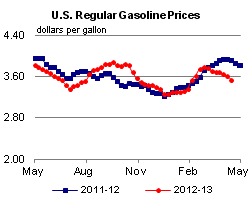
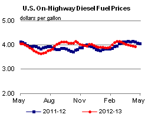
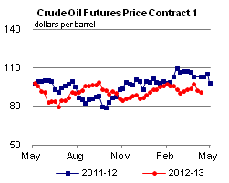
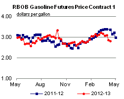
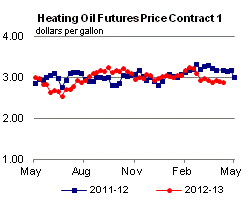
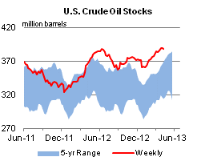
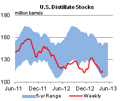
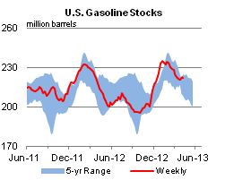
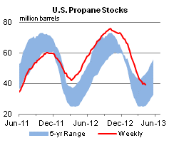

Released: April 17, 2013
Next Release: April 24, 2013
The Changing Premium for Premium Gasoline
In late 2012, the difference between the U.S. average retail prices for premium gasoline and regular gasoline reached 30 cents per gallon for the first time, a level at which it has remained for most of 2013 (Figure 1). Since 2000, the spread has climbed steadily, increasing from an average of 18 cents per gallon that year to a monthly record of 33 cents per gallon in January 2013. On a percentage basis, however, the price spread between premium and regular has been stable since 2009, with the price of premium averaging 8 percent above the price of regular (Figure 2) and ranging between 6 percent and 10 percent. Before 2009 and starting in about 2001, the spread actually declined, moving from 17 percent in late 2001 to 6 percent in mid-2008. This decline coincides with increased blending of ethanol into the motor gasoline pool.
{kind=link}
Over the last decade, ethanol has emerged as a significant component of motor gasoline (Figure 2), along with reformate, alkylate, fluid catalytic cracker gasoline, and butane. Ethanol has also become a significant source of octane. The fuel ethanol that is blended into motor gasoline has an average octane rating of 115, which is greater than the octane rating of either finished regular (87) or premium (91-93) motor gasoline. With the higher octane of ethanol blended into gasoline, the octane of the gasoline blendstock shipped from refineries has declined. The U.S. Environmental Protection Agency estimated that refiners are currently producing 84 octane blendstock that, when blended with ethanol, will meet the 87 octane minimum for regular-grade finished gasoline. Similarly, refineries are producing 88 octane blendstock that, when blended with ethanol, will meet a 91 octane premium-grade finished gasoline requirement.
{kind=link}
To lower blendstock octane, refiners reduce the use of certain refinery-produced gasoline blendstocks. Among the first blendstocks to be reduced are the highly aromatic compounds such as reformate. Reformate is a high-octane component for gasoline that is produced in a refinery by a reformer, which processes straight-chain hydrocarbons into aromatics that contain ring-shaped structures. For refiners, the cost of octane depends largely on reformer operation, which involves a tradeoff between the octane of reformate and the amount of reformate produced. As a result, higher-octane reformate, such as that used to make premium gasoline, costs more than lower-octane reformate for the same volume. This tradeoff between octane and yield is not linear, and the decline in reformate yield for a one-number change in octane increases as octane increases. Because of this non-linearity, more cost savings result from reducing octane of gasoline blendstock from 91 to 88 than from 87 to 84. Thus, as ethanol replaces reformate as a source of octane in gasoline, higher-octane gasoline blendstock becomes relatively cheaper, reducing the percentage-based grade differential for premium versus regular gasoline.
In addition to the decline in premium gasoline production costs, the change in the price relationship between premium and regular gasoline likely reflects factors such as vehicle characteristics and consumer preferences. After the use of premium gasoline peaked in the late 1980s, its consumption has fallen by more than 50 percent. In 1989, premium accounted for slightly more than a quarter of all gasoline sold in the United States; since 2006, that share has been between 8.5 and 9.5 percent.
Gasoline and diesel fuel prices fall for a 7th week
The U.S. average retail price of regular gasoline decreased seven cents from the previous week to $3.54 per gallon as of April 15, 2013, down 38 cents from last year at this time. Prices were lower in all regions of the nation, with the largest decrease in the Midwest, where the price fell 10 cents to $3.46 per gallon. The Gulf Coast price dropped seven cents to $3.36 per gallon, and the East Coast price is $3.53 per gallon, five cents lower than last week. The West Coast price declined four cents to $3.89 per gallon, but remains the highest in the nation. Rounding out the regions, the Rocky Mountain price is two cents lower than last week at $3.51 per gallon.
The national average diesel fuel price decreased four cents to $3.94 per gallon, 19 cents lower than last year at this time. Prices decreased in all regions of the nation, with the largest decrease on the West Coast, where the price decreased five cents to $4.07 per gallon. The Gulf Coast price dropped four cents to $3.85 per gallon. The East Coast and Midwest prices are both three cents lower than last week, at $3.98 per gallon and $3.92 per gallon, respectively. Rounding out the regions, the Rocky Mountain price fell two cents to $3.88 per gallon.
Propane inventories decline
U.S. propane stocks fell 1.0 million barrels to end at 39.0 million barrels last week, and are 7.3 million barrels (15.8 percent) lower than the same period a year ago. Gulf Coast inventories dropped by 1.4 million barrels, while East Coast inventories declined slightly. Midwest inventories increased by 0.4 million barrels, and Rocky Mountain/West Coast stocks gained 0.1 million barrels. Propylene non-fuel-use inventories represented 9.2 percent of total propane inventories.
Text from the previous editions of This Week In Petroleum is accessible through a link at the top right-hand corner of this page.
|  |  | ||||||
| Retail Data | Change From Last | Retail Data | Change From Last | ||||
| 04/15/13 | Week | Year | 04/15/13 | Week | Year | ||
| Gasoline | 3.542 | Diesel Fuel | 3.942 | ||||
|  |  | ||||||||||||||||||||||||||
|
 | ||||||||||||||||||||||||||
| *Note: Crude Oil Price in Dollars per Barrel. | |||||||||||||||||||||||||||
|  |  | ||||||
|  |  | ||||||
| Stocks Data | Change From Last | Stocks Data | Change From Last | ||||
| 04/12/13 | Week | Year | 04/12/13 | Week | Year | ||
| Crude Oil | 387.6 | Distillate | 115.2 | ||||
| Gasoline | 221.7 | Propane | 39.026 | ||||